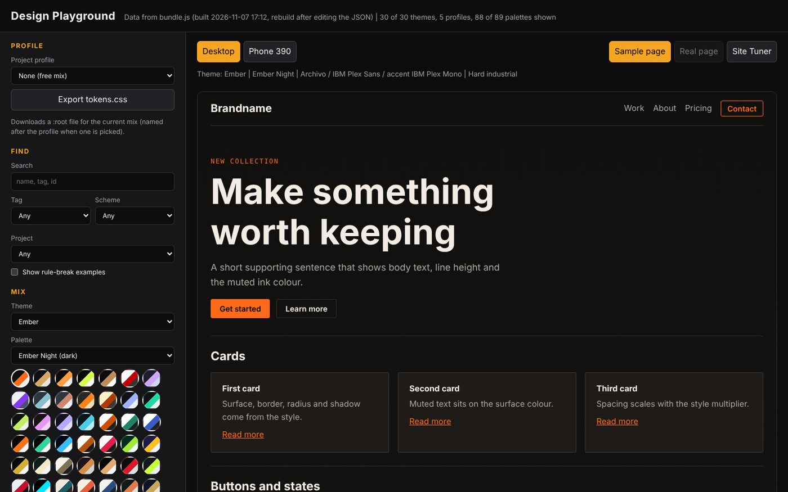
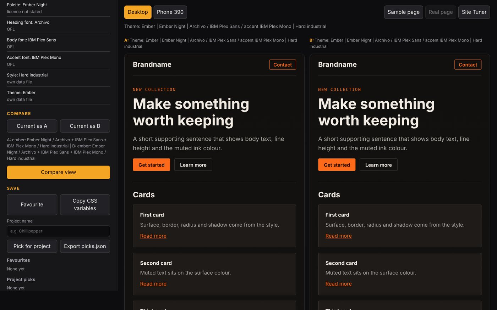
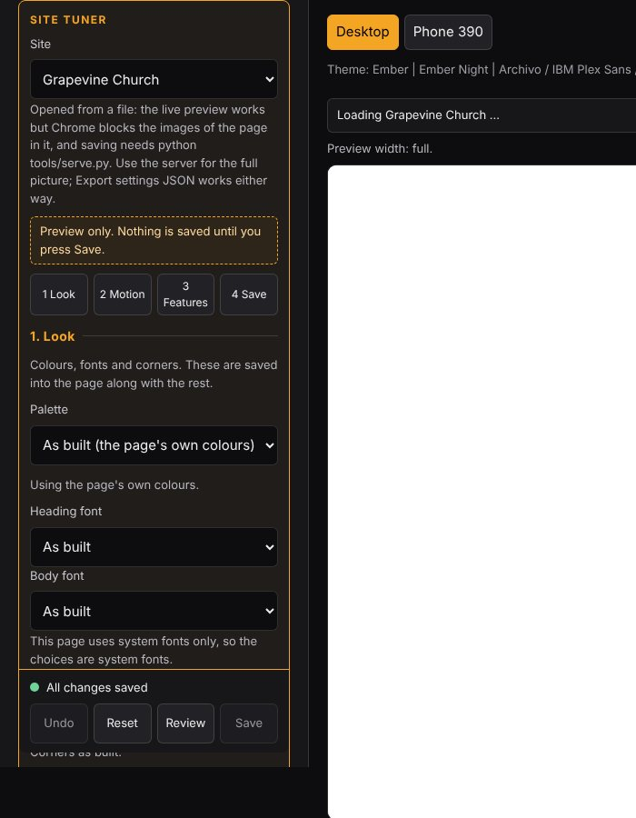

Case study · Front-end tool · 2026
Design Playground and Site Tuner
In progressSave server hardening in progress
Every new site started with the same hour of picking colours and fonts. This local tool turns those decisions into a few clicks, keeps the good combinations, and lets me tune my real websites in a sandboxed preview. Nothing is written until I have read what will change.

01 · Brief
What it is for, and my part in it
Each new site meant re-deciding colours, fonts, corners and motion by hand, then nudging CSS in the real page to see if it worked. The choices were not saved anywhere I could reuse.
I designed the tool and its rules and directed the build; AI coding agents built much of it in small tasks. Each task went through review, a design and UX check and a security review before I approved it.
A design library in plain JSON, a playground to mix and check it, and a Site Tuner that changes motion, layout and look on five of my sites in a live preview, then saves only a small settings block.
Runs on my PC through a small local server. Save server hardening is in progress, and the tuned pages are still in working copies, not on the live sites.
02 · What it does
Design decisions in one place
- MixTheme, palette, heading, body and accent fonts, and a style for corners, shadows and spacing. Or pick a saved project profile.
- CheckA live WCAG AA contrast check, a type scale specimen and a motion preview.
- LicencesEvery font and palette shows its licence, so nothing unusable slips into a client site. All 50 fonts are OFL.
- CompareSave any mix as A or B and view them side by side.
- KeepFavourite a mix, pick it for a project, copy the CSS variables or export a
tokens.cssfile. - Real pageLoad one of my sites in a sandboxed frame and apply the mix to the CSS variables that page already uses.

03 · Architecture
A page, a data library, two sandboxed frames and one small server
The playground is a single page with no framework. It reads the library from JSON files, or from a generated bundle when opened straight from disk. Site pages only ever run inside sandboxed frames. A Python server on this PC serves the pages and has exactly one write route, for Site Tuner saves.
Diagram is wide: scroll it sideways.
Source: the playground's index.html, js/app.js, js/tuner.js, hooks/tuner-core.js, tools/build-bundle.js and tools/serve.py.
04 · Data flow
Where data comes from, what checks it, where it ends up
The library is plain JSON with a written schema. Every value is checked before it becomes CSS, and checked again on the way out. The only outside call the playground makes is for Google Fonts; there are no accounts, no analytics and no cloud storage.
Diagram is wide: scroll it sideways.
Source: data/SCHEMA.md, tools/build-bundle.js and validate-bundle.js, the playground's CSP (connect-src 'self') and the T-0084 security review.
05 · Workflow
Tuning a site, start to finish
The Site Tuner loads one of my sites in its sandboxed frame and steps through Look, Motion and Features. Every change is preview-only. Saving is two steps: the server first builds a diff and writes nothing, then a write is accepted only with the hash from that diff, so a stale review cannot be saved.
Diagram is wide: scroll it sideways.
The panel is built for someone tuning by eye. Each slider shows its value with units and a one-line meaning, presets set several sliders at once, and the save bar keeps Undo, Reset, Review and Save in reach. Review shows a plain summary, such as “Animation speed: 1.0× → 1.4×”, with the raw diff under “Technical detail”.
At the default settings each hooked page renders the same as before the hook, so adding the tuner changes nothing until I change something.
Source: js/tuner.js, hooks/tuner-core.js and the handle_save route in tools/serve.py; T-0092 result notes.

06 · Security and privacy
How the trust boundaries are drawn
The tool loads my own sites, which run their own scripts, and it can write files. So the design keeps site code in sandboxes, treats every message as untrusted, and gives the server one narrow write route.
- TodayLocal-only server.
serve.pylistens on127.0.0.1only and accepts onlylocalhostHost headers, which blocks DNS-rebinding tricks from other websites. It serves only the playground and the tuned sites, refuses secret-looking files such as.envand.git, and never lists folders. It replaced a plain Python file server that a security review found was exposing too much. - TodaySandboxed previews. The real-page view runs the site with scripts switched off. The Site Tuner view runs scripts but never with
allow-same-origin, so the framed page cannot reach into the playground. A code comment says never to combine the two. - TodaypostMessage checks. The playground accepts replies only from its own preview frame and only in the expected shape. The page hook listens only when the page is opened with
?tuner=1and only to its parent. Every number is clamped. Easings, section ids and fonts must come from per-site allowlists, and colours must pass a pattern and the browser's own check. The hook builds CSS only from values it formats itself and never usesinnerHTML. - TodayValidated saves. One POST route, exact path. The Host, Origin and fetch-site headers must all be local, the body must be JSON under 8 KB, and the client names a target, never a file path. Unknown keys, wrong types and out-of-range values are refused. A write needs the hash from the diff step. The server makes a backup and swaps the file in one atomic step, and it changes only the settings block.
- TodaySite CSPs kept strict. Four sites needed no change. The portfolio's policy got only the hook's exact script hash, and the hook injects styles through a constructed stylesheet, so no
'unsafe-inline'was added. - TodayPrivacy. No accounts, no analytics, no cloud storage. Favourites and picks stay in this browser's
localStorage. Profile text is shown as plain text only, and exportedtokens.cssvalues are re-checked before they are written. - In progressSave server hardening in progress. Further hardening of
serve.pyis being built and will get its own security review.
Reviews: design & UX and web-security gates on T-0084 and T-0092, plus a fix pass after each. Source: the T-0084 and T-0092 result and review notes.
07 · Stack, results, limits, next
The facts, with sources
Stack
One HTML page with plain JavaScript and CSS, no framework. The library is JSON with a written schema, and Node scripts build and validate a bundle so the page also works when opened straight from disk. A small Python server using only the standard library serves the pages and handles saves. A Playwright test script drives headless Chromium through the tuner, including hostile messages and hostile save requests.
Results
- Picking a look for a new site is now a few clicks against a shared library, and the choice can leave as a
tokens.cssfile. - The real-page view applied the library to each site's own CSS variables: Chillipepper 12 of 21, Fire & Co 3 of 8, Grapevine 7 of 17, Portfolio 6 of 11, Gyro winder 5 of 8.
- The playground and sites showed 0 console errors, 0 CSP violations and no sideways scroll at 1440 px and 390 px.
Honest bug note: the export button once fired the same download about 16 times. I found it, cleaned up, and logged the fix as a task.
Limitations
- The real-page view runs no scripts, so pages that reveal content with JavaScript look emptier than they really are.
- Opened straight from disk, the browser blocks live variables in the real-page view; it needs the local server.
- Matching the library to a page's variables is a name-based guess. The tool lists exactly which names it set.
- The tuner can only use fonts and styles each page can already render; adding a web font needs a CSP decision per site.
- Saves go to working copies only. Moving tuned pages to the live sites is a separate, reviewed merge that has not happened yet.
- Framed site pages still load their own assets, such as fonts, from wherever those pages point.
- All five project profiles are still drafts, and it is a single-user tool on one PC.
What's next
- Finish the save server hardening and its security re-check.
- A clean, independent re-run of the full tuner test on an idle machine.
- Approve the five profiles, then merge the tuned pages into the live sites after review.
- Switch the playground's CSS value filter from a blocklist to an allowlist, as the first security review suggested.